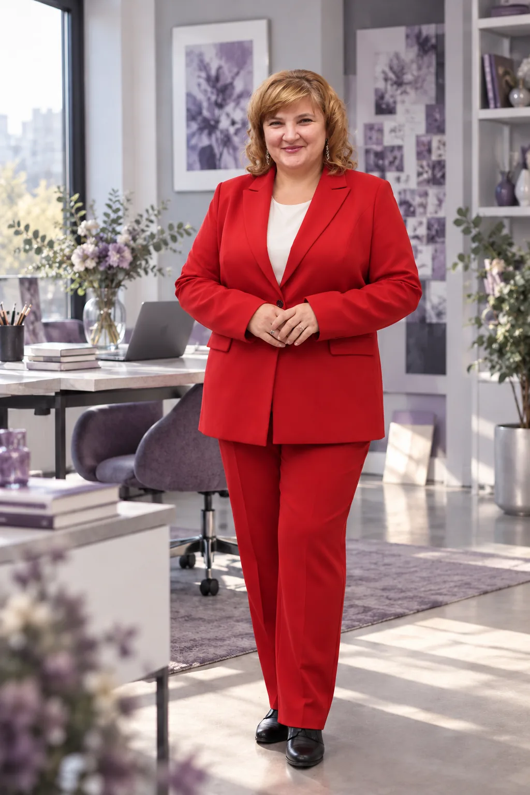
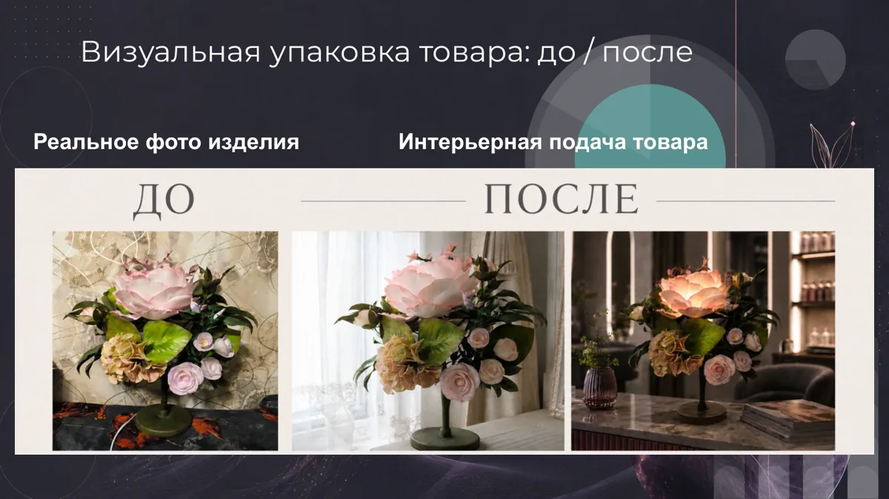
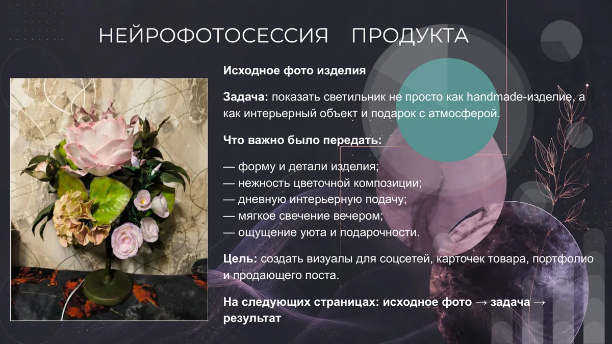
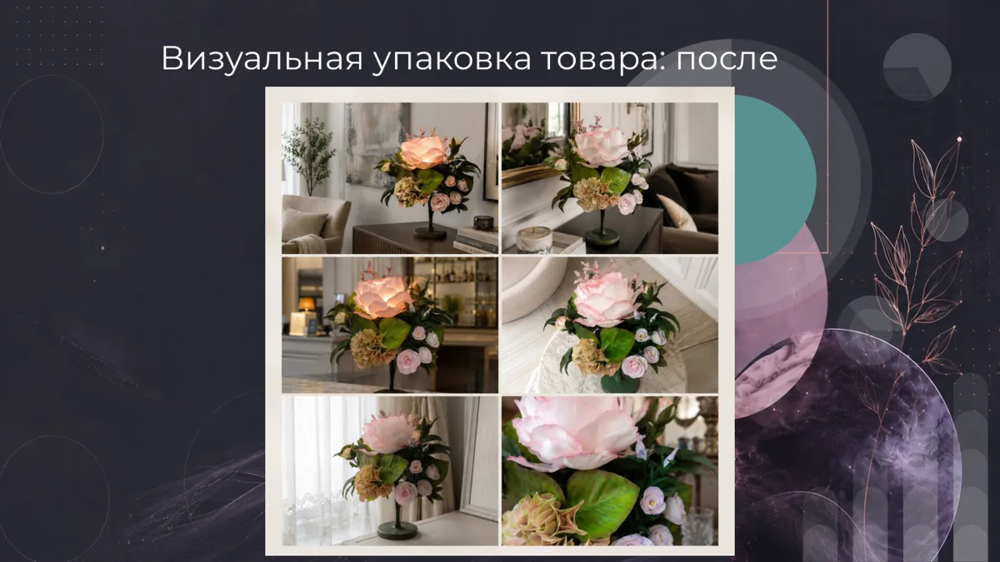
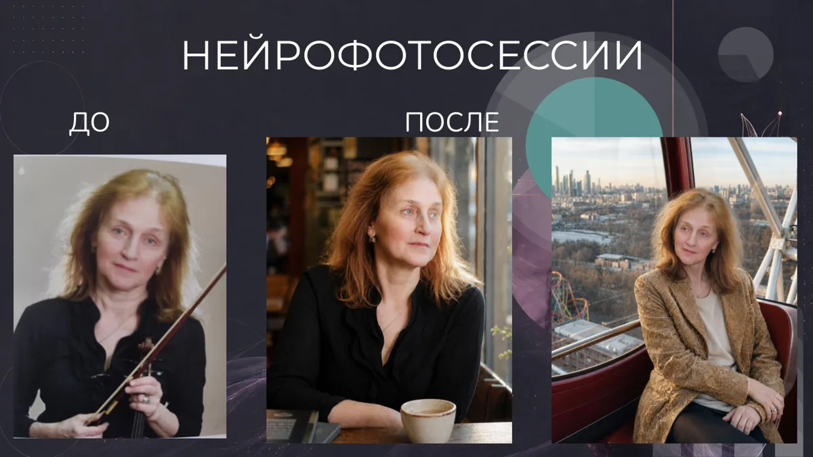
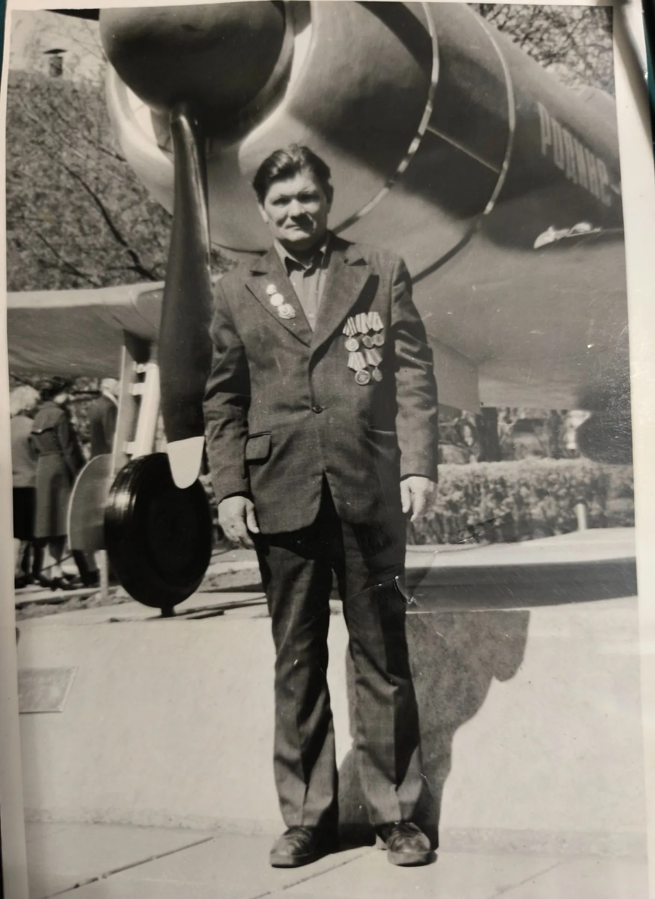
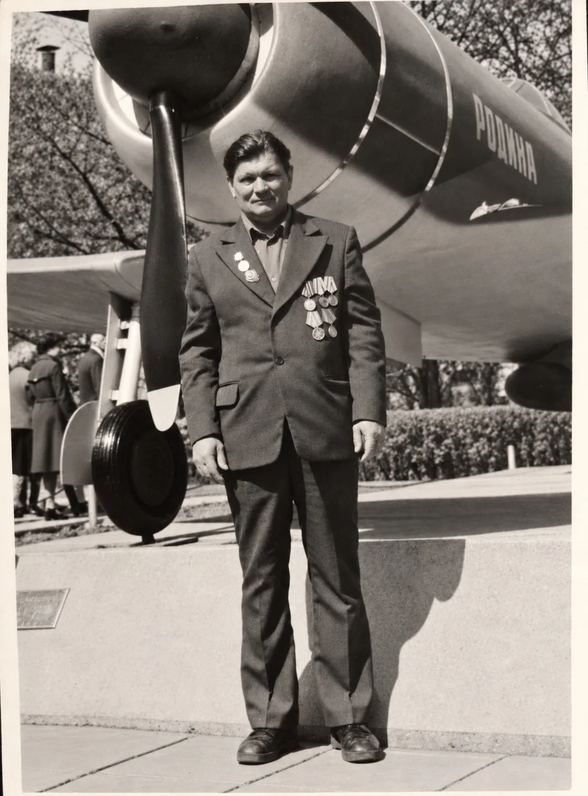
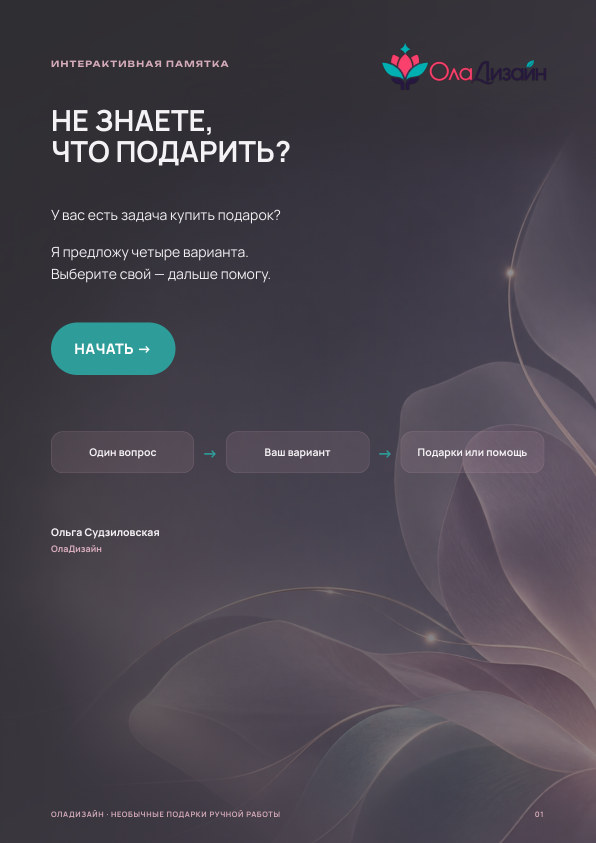
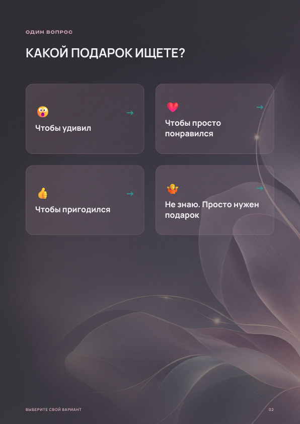
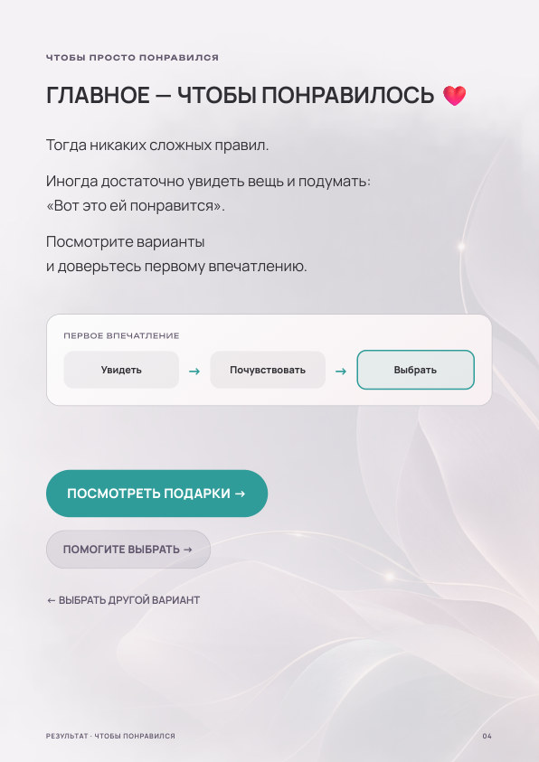

Для дела
Визуалы с ИИ
Изображения и оформление для социальных сетей, товаров и проектов
Сайты
Страницы, на которых можно представить себя, свои услуги или проект
ПДФ-материалы
Портфолио, презентации, гайды, каталоги и прайсы
Ольга Судзиловская
Для дела и для себя

Что можно заказать
Каждую услугу можно заказать отдельно
Изображения и оформление для социальных сетей, товаров и проектов
Страницы, на которых можно представить себя, свои услуги или проект
Портфолио, презентации, гайды, каталоги и прайсы
Образы на основе ваших фотографий: для сайта и профессионального профиля, социальных сетей или просто для себя
Бережное восстановление повреждённых и выцветших снимков с сохранением внешности людей
Мои работы

Исходник → результат
Задача
РезультатПо фотографии реального изделия создана серия атмосферных визуалов для социальных сетей и карточек товара

ИсходникНа основе исходного портрета создана серия образов с разным настроением и окружением

До
ПослеВыполнена реставрация старого снимка



Интерактивная памятка из шести страниц, которая помогает выбрать подходящий подарок